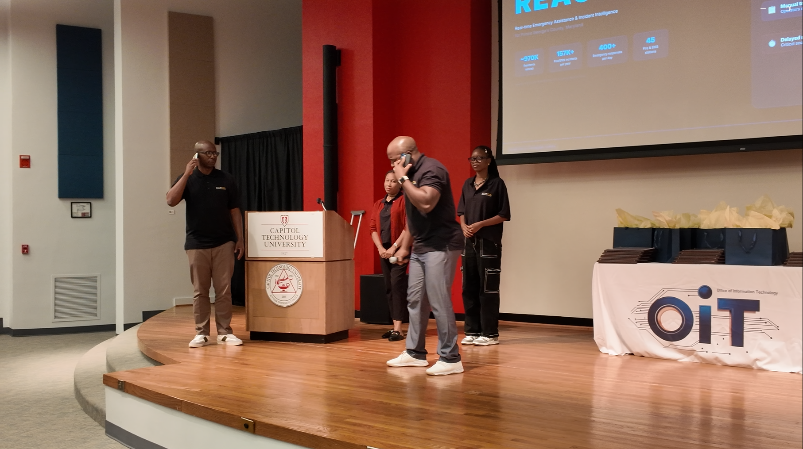

Sept 18, 2026
PG County Future Tech Hackathon — 1st & 2nd place
Fourteen Bowie State students built three AI-powered civic tools at Capitol Technology University:
- REACH (1st) — real-time emergency-response and incident-intelligence platform for Prince George's County. Team's own stats: ~970,000 residents served, 157,000+ households, 400+ emergency responses/day, 45 fire and EMS stations.
- MamaCare PG (2nd) — helps pregnant women and new mothers find maternal-health and community resources.
- PGC Smart Assist — civic intelligence platform using real-time public-safety data.
Sponsors: Prince George's County Government, Amazon Web Services, Capitol Technology University, Accenture. The county's Office of Information Technology presented me with its Community Solutions Award for organizing CDA's participation.

Jul – Aug 2026
Community Data & Civic Analytics Lab — 2026 cohort
Students tackled real problems in healthcare, transportation, housing, responsible gambling, and AI, and presented to leaders across sectors. Partners: Prince George's County government and the U.S. Census Bureau.
June 5, 2026
Judge, BSU High School Pitch Competition
Hosted by the Entrepreneurship Innovation Center. 17 student entrepreneurs applied from six Prince George's County high schools; 5 finalists pitched to a panel and 30+ educators, entrepreneurs, and community leaders.
Spring 2026
9th Annual Bulldog Pitch Competition
Led "Standing Out with Data," a workshop helping finalists turn ideas into data-backed pitches using tools like the Census Bureau's Business Builder. The finals drew 600+ attendees and awarded $30,000+ in prizes.
Apr 28, 2026
CDA Student AI Innovation Showcase
Co-hosted with the Computer Science Department. 105 attendees including guests from Deloitte and Constellation Energy, 17 student projects, a $10,000 prize pool. High schoolers from Langley HS and Marriotts Ridge HS presented alongside BSU students.
Mar 10, 2026
Speaker, BSU Women's Forum
"Bloom: Redefining Your Purpose" — Chat & Chew Series, Women's History Month. Invited as a BSU alumna and CDA Program Manager to speak on growth, purpose, and leadership.
Early 2026
Washington, DC Executive Roundtable
TechTalk Summits, supported by Stefanini Group. Joined technology executives — including Visa's Chief Cloud Architect — for a roundtable on GenAI in the cloud.
Jan 2026
Presented at EDU2026, Honolulu
24th Annual Hawaii International Conference on Education. Co-authored and presented "Match Program: A Community Based Approach to Advancing Experiential Learning in Data Analytics through Mentorship," with Amina Ayodeji-Ogundiran and Eona Harrison, PhD (proceedings p. 1013). Brought mentees to the conference.
Read the proceedings (PDF)

Sept 2025
AfroTech Conference 2025
Represented Bowie State's CDA under the "DigiBibi" brand at AfroTech, Houston — partnership conversations with T-Mobile, AWS, and HPE on curriculum design, recruitment, and research.
Full write-up
2025 – ongoing
EIC Market Research Collaboration
8 professional market research reports for student entrepreneurs through the Entrepreneurship Innovation Center, generating $12K+ in consulting value.
Full write-up
2025
Sincerely, Love Mental Health Summit
Hosted by CDA. Led a live data activity on how people define, feel, and express love. Attendees included City of Laurel Mayor Keith Sydnor and Forest Heights Mayor Troy Barrington Lilly. A related CDA post also featured a video message from Maryland Governor Wes Moore.
Full write-up
2025
Sports Analytics Camp
Introduced high school students to sports analytics and data visualization through a hands-on workshop.
Full write-up
2025
CDA hosted by T-Mobile's Curiosity Lab
Visited T-Mobile for Education's Curiosity Lab in Peachtree Corners, Atlanta, to see how the space uses innovation and technology to shape the future of learning.

2024
Assistant Facilitator, NSF Workshop: Data and the African Diaspora
National Science Foundation-funded workshop on culturally relevant data science education at HBCUs. Mentor: LaTanya Brown-Robertson, PhD. Partner schools: Bowie State, Clark Atlanta, Fisk, Howard, and Spelman.
Full write-up
Sept 2022
APDU Conference, Arlington, VA
Received a scholarship to attend the Association of Public Data Users conference as a BSU College of Business representative.